%matplotlib inline
%load_ext autoreload
%autoreload 2
from pymks.datasets.microstructureGenerator import MicrostructureGenerator
X = MicrostructureGenerator(n_samples=100, size=(31, 31), n_phases=2, grain_size=(10, 10)).generate()
plt.imshow(X[0])
<matplotlib.image.AxesImage at 0x7ffc7ce264d0>
from pymks import SpatialStatisticsModel
from pymks import MKSRegressionModel
from pymks.bases import DiscreteIndicatorBasis
basis = DiscreteIndicatorBasis(n_states=2)
MKSmodel = MKSRegressionModel(basis=basis)
SpatStats = SpatialStatisticsModel(basis=basis)
from pymks.datasets.microstructureGenerator import get_microstructure
n_samples = 100
n = 31
n_phases = 2
size = (n, n)
X = get_microstructure(n_samples, size, n_phases)
print X.dtype
X_auto = SpatStats.get_autocorrelation(X)
print X_auto.shape
int32
(100, 31, 31, 2)
plt.imshow(X[0], interpolation='none')
<matplotlib.image.AxesImage at 0xac1b904c>
plt.imshow(X_auto[0, ..., 0], interpolation='none')
plt.colorbar()
print np.sum(X_auto[0, ..., 1])
82.4162330905
plt.imshow(X_auto[0,...,1], interpolation='none')
plt.colorbar()
<matplotlib.colorbar.Colorbar instance at 0xac07726c>
X = np.array([[[0, 1, 0], [0, 1, 0], [0, 1, 0]]])
X_auto = SpatStats.get_autocorrelation(X)
print X_auto
(1, 3, 3, 2)
[1 2]
[[[[ 1.66666667e-01 -3.28954970e-17]
[ 1.66666667e-01 -3.28954970e-17]
[ 3.33333333e-01 1.66666667e-01]]
[[ 1.66666667e-01 -3.28954970e-17]
[ 1.66666667e-01 -3.28954970e-17]
[ 3.33333333e-01 1.66666667e-01]]
[[ 1.66666667e-01 -3.28954970e-17]
[ 1.66666667e-01 -3.28954970e-17]
[ 3.33333333e-01 1.66666667e-01]]]]
plt.imshow(X_auto[0,...,1] + X_auto[0,...,0], interpolation='none')
plt.colorbar()
/home/david/anaconda/lib/python2.7/site-packages/matplotlib/colorbar.py:829: RuntimeWarning: divide by zero encountered in divide
z = np.take(y, i0) + (xn - np.take(b, i0)) * dy / db
<matplotlib.colorbar.Colorbar instance at 0xabe808cc>
from pymks.datasets.microstructureGenerator import microstructure_generator
n_samples = 1
n = 50
n_phases = 2
size = (n, n)
plt.imshow(microstructure_generator(n_samples, size, n_phases)[0])
<matplotlib.image.AxesImage at 0xa88894ec>
from pymks.datasets.microstructureGenerator import get_microstructure
np.random.seed(10)
n_samples, n_phases = 1, 2
#n_samples = 1
#n = 3
#n_phases = 2
size = (3, 3)
X = get_microstructure(n_samples, size, n_phases)
X_test = np.array([[ 0., 1., 0.],
[ 0., 0., 1.],
[ 1., 0., 1.]])
#plt.imshow(X[0], interpolation='none')
#print X[0]
assert(np.allclose(X, X_test))
X_cum = np.cumsum(np.histogram(X, bins=100)[0])
plt.plot(X_cum)
[<matplotlib.lines.Line2D at 0xa1e310ec>]
m = 3
n = (np.arange(m+1)) * 1. / m
values = np.round(n * 100)
print values
print X_cum[33]
[ 0. 33. 67. 100.]
208233407.661
from scipy.stats import norm
m = 10
normalization = np.sqrt(2 * np.pi)
x1 = np.linspace(-normalization , normalization, m)
x2 = np.linspace(-5, 5, m)
#plt.plot(norm.pdf(x1))
y1 = norm.pdf(x1) * normalization
y2 = norm.pdf(x2) * normalization
print(np.max(y1))
#plt.plot(y1)
plt.imshow(np.outer(y1, y1, y1))
plt.colorbar()
---------------------------------------------------------------------------
TypeError Traceback (most recent call last)
<ipython-input-208-f3c2db246b68> in <module>()
9 print(np.max(y1))
10 #plt.plot(y1)
---> 11 plt.imshow(np.outer(y1, y1, y1))
12 plt.colorbar()
TypeError: outer() takes exactly 2 arguments (3 given)
0.961957416885
y3 = np.roll(y1, 4, axis=0)
plt.imshow(np.outer(y1, y3))
plt.colorbar()
<matplotlib.colorbar.Colorbar instance at 0x20158950>
from scipy import signal
L = 121
x = np.arange(L)
xp1 = x - ((L) / 2)
xp2 = x - ((L) / 2)
print xp
ga1 = np.exp(-((np.arange(L) - (L / 2)) / (L / 8.)) ** 2)
#ga2 = np.exp(-(xp2 / ((L) / 4.2)) ** 2)
q = signal.gaussian(L, L / 8)
#ga = ga1 * ga2
#print q
#print ga
plt.plot(q)
plt.plot(ga1)
#plt.plot(ga1)
#plt.plot(ga2)
[-5 -4 -3 -2 -1 0 1 2 3 4]
[<matplotlib.lines.Line2D at 0xa2ffe3ac>]
from scipy import signal
L = 21
gaussian = signal.gaussian(L, L / 4)
dim = 3
print dim * (L,)
gaussian = np.ones(dim * (L,)) * gaussian
gaussian_tmp = np.ones((dim,) + gaussian.shape)
for ii in range(dim):
gaussian = np.rot90(gaussian.swapaxes(0, dim -1), dim)
gaussian_tmp[ii] = gaussian
gaussian_filter = np.prod(gaussian_tmp, axis=0)
plt.imshow(gaussian_filter[11])
plt.colorbar()
(21, 21, 21)
<matplotlib.colorbar.Colorbar instance at 0xab845d6c>
[1 * p + 1 for p in np.arange(len(Q.shape) - 2)]
#print Qf.shape
[1]
ons = np.ones((L, L, L))
Q = ons * q
plt.imshow(Q[11])
<matplotlib.image.AxesImage at 0xad67fbcc>
#from scipy.stats import multivariate_normal
from scipy.stats.multivariate_normal import multivariate_normal
x = np.linspace(0, 5, 10, endpoint=False)
y = mn.pdf(x, mean=2.5, cov=0.5)
print y
plt.plot(x, y)
---------------------------------------------------------------------------
ImportError Traceback (most recent call last)
<ipython-input-279-ac485fe001c8> in <module>()
1 #from scipy.stats import multivariate_normal
----> 2 from scipy.stats.multivariate_normal import multivariate_normal
3
4 x = np.linspace(0, 5, 10, endpoint=False)
5 y = mn.pdf(x, mean=2.5, cov=0.5)
ImportError: No module named multivariate_normal
values, base = np.histogram(X, bins=100)
#evaluate the cumulative
cumulative = np.cumsum(values)
# plot the cumulative function
plt.plot(base[:-1], cumulative, c='blue')
#plot the survival function
plt.plot(base[:-1], len(X)-cumulative, c='green')
[<matplotlib.lines.Line2D at 0xb82a290>]
L = 3
X = np.ones((L, L, L))
x = np.linspace(- (L) / 2, (L) / 2, L - 1 )
y = L / 2 - abs(np.arange(L) - L / 2)
mesh_size = [y for p in np.arange(len(X.shape))]
print y.shape
Ones = np.ones((L, L, L)) * y
print Ones
for ii in range(len(X.shape) - 1):
print ii
print np.transpose(Ones, axes=(ii + 1))
Ones = Ones * np.transpose(Ones, axes=ii + 1)
print Ones
#print mesh_size
#print mesh_size[0]
#np.meshgrid(mesh_size)
(3,)
[[[ 0. 1. 0.]
[ 0. 1. 0.]
[ 0. 1. 0.]]
[[ 0. 1. 0.]
[ 0. 1. 0.]
[ 0. 1. 0.]]
[[ 0. 1. 0.]
[ 0. 1. 0.]
[ 0. 1. 0.]]]
0
---------------------------------------------------------------------------
ValueError Traceback (most recent call last)
<ipython-input-153-e1fadf94a7c0> in <module>()
11 for ii in range(len(X.shape) - 1):
12 print ii
---> 13 print np.transpose(Ones, axes=(ii + 1))
14 Ones = Ones * np.transpose(Ones, axes=ii + 1)
15 print Ones
/home/david/anaconda/lib/python2.7/site-packages/numpy/core/fromnumeric.pyc in transpose(a, axes)
532 except AttributeError:
533 return _wrapit(a, 'transpose', axes)
--> 534 return transpose(axes)
535
536
ValueError: axes don't match array
N = 20
k = np.arange(N)
k[N / 2:] = (k - N / 2)[:N / 2]
print (k - N / 2)[:N / 2]
[-10 -9 -8 -7 -6 -5 -4 -3 -2 -1]
X = np.array([[[0, 1, 0],
[0, 1, 0],
[0, 1, 0]]])
print X.shape
print np.array(X.shape)
y = np.array(X.shape)
print np.prod(y)
X_ = basis.discretize(X)
print SpatStats._fftconvolve(X_, X_)
C = SpatStats.Autocorrelation(X)
np.real_if_close(np.where(C < 1e-10, 0, C))
(1, 3, 3)
[1 3 3]
9
[[[[ 5.00000000e-01+0.j -1.31581988e-16+0.j]
[ 1.66666667e-01+0.j 3.33333333e-01+0.j]
[ 1.66666667e-01+0.j 3.33333333e-01+0.j]]
[[ 5.00000000e-01+0.j -1.31581988e-16+0.j]
[ 1.66666667e-01+0.j 3.33333333e-01+0.j]
[ 1.66666667e-01+0.j 3.33333333e-01+0.j]]
[[ 5.00000000e-01+0.j -1.31581988e-16+0.j]
[ 1.66666667e-01+0.j 3.33333333e-01+0.j]
[ 1.66666667e-01+0.j 3.33333333e-01+0.j]]]]
array([[[[ 0.5 , 0. ],
[ 0.16666667, 0.33333333],
[ 0.16666667, 0.33333333]],
[[ 0.5 , 0. ],
[ 0.16666667, 0.33333333],
[ 0.16666667, 0.33333333]],
[[ 0.5 , 0. ],
[ 0.16666667, 0.33333333],
[ 0.16666667, 0.33333333]]]])
from pymks.datasets.microstructureGenerator import microstructure_generator
microstructure_generator(np.zeros((5, 5)))
/home/david/anaconda/lib/python2.7/site-packages/numpy/core/numeric.py:178: DeprecationWarning: using a non-integer number instead of an integer will result in an error in the future
a = empty(shape, dtype, order)
---------------------------------------------------------------------------
IndexError Traceback (most recent call last)
<ipython-input-19-442a14176a6a> in <module>()
----> 1 microstructure_generator(np.zeros((5, 5)))
/home/david/git/pymks/pymks/datasets/microstructureGenerator.py in microstructure_generator(X)
4
5 def microstructure_generator(X):
----> 6 _make_filter(X)
7
8
/home/david/git/pymks/pymks/datasets/microstructureGenerator.py in _make_filter(X)
10 shape = np.array(X[0].shape) / 4.
11 filt = np.zeros_like(X[0].shape)
---> 12 filt[:np.split(shape, len(shape))] = np.ones(shape)
13 print filt
14
IndexError: invalid slice
X = np.linspace(0, 1., 4).reshape(2, 2)
print X
MSf = MicrostructureFunction(4)
MSf._Legendre(X, deg=4, domain=[0, 1])
[[ 0. 0.33333333]
[ 0.66666667 1. ]]
array([[[-3.5 , 2.5 , -1.5 , 0.5 ],
[ 1.42592593, -0.83333333, -0.5 , 0.5 ]],
[[-1.42592593, -0.83333333, 0.5 , 0.5 ],
[ 3.5 , 2.5 , 1.5 , 0.5 ]]])
X0 = (2. * np.arange(4) + 1) / 2.
print X0
[ 0.5 1.5 2.5 3.5]
MSf._Legendre_fft(X, deg=4, domain=[0, 1])
[0 1]
array([[[ 0.00000000e+00+0.j, 3.33333333e+00+0.j, 0.00000000e+00+0.j,
2.00000000e+00+0.j],
[ -9.85185185e+00+0.j, -4.44089210e-16+0.j, -2.00000000e+00+0.j,
0.00000000e+00+0.j]],
[[ -4.14814815e+00+0.j, 2.22044605e-16+0.j, -4.00000000e+00+0.j,
0.00000000e+00+0.j],
[ 0.00000000e+00+0.j, 6.66666667e+00+0.j, 0.00000000e+00+0.j,
0.00000000e+00+0.j]]])
X = np.array([[1., 2.], [0., 1.]])
y = 3. * X
print y
print X
LR = linear_model.LinearRegression()
LR.fit(X, y)
print 'coeff', LR.coef_
print 'Intercept',LR.intercept_
LR.predict(X)
[[ 3. 6.]
[ 0. 3.]]
[[ 1. 2.]
[ 0. 1.]]
coeff [[ 1.5 1.5]
[ 1.5 1.5]]
Intercept [-1.5 1.5]
array([[ 3.00000000e+00, 6.00000000e+00],
[ 6.66133815e-16, 3.00000000e+00]])
import matplotlib as mlab
num_bins = 50
mu = 0.5
sigma = 0.001
X = np.random.normal(mu, sigma, size=(101, 101))
n, bins, patches = plt.hist(X, num_bins, normed=1, facecolor='green', alpha=0.5)
# add a 'best fit' line
y = mlab.normpdf(bins, mu, sigma)
plt.plot(bins, y, 'r--')
---------------------------------------------------------------------------
AttributeError Traceback (most recent call last)
<ipython-input-19-6b080d0ab04d> in <module>()
6 n, bins, patches = plt.hist(X, num_bins, normed=1, facecolor='green', alpha=0.5)
7 # add a 'best fit' line
----> 8 y = mlab.normpdf(bins, mu, sigma)
9 plt.plot(bins, y, 'r--')
AttributeError: 'module' object has no attribute 'normpdf'
X = 0.1 * np.random.randn(101, 101) + 0.5
plt.hist(X)
([array([ 0., 0., 4., 16., 25., 27., 23., 5., 1., 0.]),
array([ 0., 0., 2., 8., 22., 29., 29., 8., 3., 0.]),
array([ 1., 0., 3., 10., 24., 29., 23., 7., 3., 1.]),
array([ 0., 0., 3., 17., 25., 25., 18., 12., 1., 0.]),
array([ 0., 0., 4., 13., 17., 33., 27., 6., 1., 0.]),
array([ 0., 0., 4., 13., 25., 31., 19., 7., 2., 0.]),
array([ 1., 1., 5., 6., 25., 30., 22., 9., 2., 0.]),
array([ 0., 1., 6., 8., 30., 29., 14., 11., 2., 0.]),
array([ 0., 0., 3., 9., 23., 34., 26., 6., 0., 0.]),
array([ 0., 1., 3., 11., 28., 29., 16., 10., 1., 2.]),
array([ 0., 0., 6., 12., 22., 33., 17., 8., 2., 1.]),
array([ 0., 1., 5., 12., 18., 28., 24., 10., 2., 1.]),
array([ 0., 0., 6., 10., 25., 27., 24., 8., 1., 0.]),
array([ 0., 2., 4., 13., 21., 25., 21., 13., 1., 1.]),
array([ 0., 0., 2., 11., 18., 37., 20., 12., 1., 0.]),
array([ 0., 0., 2., 11., 35., 21., 20., 11., 1., 0.]),
array([ 0., 0., 3., 9., 26., 29., 21., 7., 6., 0.]),
array([ 0., 1., 5., 10., 19., 30., 23., 10., 2., 1.]),
array([ 0., 0., 1., 9., 32., 30., 19., 6., 4., 0.]),
array([ 0., 0., 5., 13., 25., 31., 18., 4., 4., 1.]),
array([ 0., 0., 4., 10., 30., 22., 24., 8., 2., 1.]),
array([ 0., 1., 5., 9., 29., 28., 20., 6., 3., 0.]),
array([ 0., 0., 1., 7., 27., 25., 27., 10., 4., 0.]),
array([ 0., 0., 2., 8., 30., 29., 18., 9., 5., 0.]),
array([ 0., 0., 7., 13., 23., 27., 26., 4., 1., 0.]),
array([ 0., 0., 2., 11., 28., 19., 29., 9., 3., 0.]),
array([ 0., 1., 4., 8., 22., 32., 23., 7., 3., 1.]),
array([ 0., 0., 3., 13., 24., 30., 24., 6., 1., 0.]),
array([ 0., 2., 3., 15., 24., 21., 26., 10., 0., 0.]),
array([ 0., 0., 5., 16., 26., 20., 26., 7., 1., 0.]),
array([ 0., 1., 4., 17., 22., 25., 21., 9., 2., 0.]),
array([ 0., 1., 2., 13., 25., 31., 19., 7., 2., 1.]),
array([ 0., 0., 2., 15., 19., 23., 22., 17., 2., 1.]),
array([ 0., 0., 1., 17., 24., 33., 20., 5., 1., 0.]),
array([ 0., 0., 6., 9., 30., 31., 15., 10., 0., 0.]),
array([ 0., 0., 5., 15., 24., 19., 31., 5., 1., 1.]),
array([ 0., 1., 5., 6., 27., 30., 21., 10., 0., 1.]),
array([ 0., 0., 2., 16., 25., 34., 18., 5., 1., 0.]),
array([ 0., 0., 5., 19., 24., 25., 17., 8., 2., 1.]),
array([ 0., 1., 5., 15., 16., 28., 24., 8., 4., 0.]),
array([ 0., 0., 1., 12., 16., 32., 24., 11., 5., 0.]),
array([ 0., 0., 1., 7., 28., 29., 23., 13., 0., 0.]),
array([ 0., 0., 3., 11., 21., 35., 19., 11., 1., 0.]),
array([ 0., 0., 5., 13., 24., 26., 21., 11., 1., 0.]),
array([ 0., 0., 0., 11., 20., 34., 18., 15., 2., 1.]),
array([ 0., 0., 4., 17., 17., 35., 21., 5., 2., 0.]),
array([ 0., 1., 4., 10., 24., 28., 21., 10., 2., 1.]),
array([ 0., 2., 2., 13., 19., 28., 22., 13., 2., 0.]),
array([ 0., 2., 2., 12., 18., 32., 19., 13., 3., 0.]),
array([ 0., 1., 6., 10., 22., 31., 15., 14., 2., 0.]),
array([ 0., 0., 1., 9., 23., 36., 20., 12., 0., 0.]),
array([ 0., 0., 2., 14., 30., 34., 11., 7., 3., 0.]),
array([ 0., 1., 1., 8., 31., 30., 17., 11., 1., 1.]),
array([ 0., 0., 3., 19., 21., 33., 18., 6., 1., 0.]),
array([ 0., 0., 3., 12., 29., 22., 25., 5., 5., 0.]),
array([ 0., 1., 2., 9., 25., 25., 22., 9., 8., 0.]),
array([ 0., 2., 6., 13., 25., 26., 17., 10., 1., 1.]),
array([ 1., 0., 4., 12., 20., 28., 27., 8., 1., 0.]),
array([ 0., 0., 1., 13., 18., 42., 19., 5., 2., 1.]),
array([ 0., 0., 5., 7., 20., 28., 23., 15., 3., 0.]),
array([ 0., 0., 2., 15., 23., 30., 19., 9., 2., 1.]),
array([ 0., 0., 2., 15., 22., 33., 16., 11., 1., 1.]),
array([ 0., 2., 5., 15., 24., 23., 20., 10., 1., 1.]),
array([ 0., 1., 4., 10., 26., 32., 17., 9., 2., 0.]),
array([ 0., 0., 4., 13., 22., 33., 19., 9., 1., 0.]),
array([ 1., 0., 0., 14., 25., 28., 22., 8., 3., 0.]),
array([ 0., 0., 4., 11., 22., 36., 20., 6., 2., 0.]),
array([ 1., 1., 6., 4., 31., 31., 17., 9., 1., 0.]),
array([ 0., 1., 1., 11., 19., 30., 15., 16., 8., 0.]),
array([ 0., 1., 2., 10., 29., 23., 26., 6., 4., 0.]),
array([ 0., 1., 2., 10., 22., 34., 18., 10., 4., 0.]),
array([ 0., 2., 1., 9., 15., 28., 29., 14., 3., 0.]),
array([ 0., 1., 1., 15., 21., 26., 21., 11., 5., 0.]),
array([ 0., 0., 5., 13., 22., 29., 20., 9., 3., 0.]),
array([ 0., 1., 4., 15., 19., 36., 18., 8., 0., 0.]),
array([ 0., 0., 5., 8., 21., 34., 23., 8., 1., 1.]),
array([ 1., 1., 4., 12., 21., 34., 17., 10., 0., 1.]),
array([ 1., 0., 3., 14., 31., 32., 12., 3., 5., 0.]),
array([ 0., 0., 4., 9., 27., 27., 22., 9., 3., 0.]),
array([ 0., 0., 3., 10., 28., 33., 19., 7., 1., 0.]),
array([ 0., 1., 1., 10., 30., 24., 20., 13., 2., 0.]),
array([ 0., 1., 3., 8., 23., 32., 25., 7., 2., 0.]),
array([ 0., 0., 4., 10., 24., 37., 18., 7., 1., 0.]),
array([ 0., 0., 6., 15., 16., 38., 19., 6., 1., 0.]),
array([ 0., 0., 4., 9., 30., 30., 20., 5., 3., 0.]),
array([ 0., 0., 2., 12., 29., 29., 19., 8., 2., 0.]),
array([ 0., 0., 3., 10., 17., 40., 15., 13., 3., 0.]),
array([ 0., 1., 5., 15., 27., 26., 16., 9., 2., 0.]),
array([ 1., 0., 3., 10., 23., 27., 21., 12., 3., 1.]),
array([ 0., 0., 5., 17., 19., 28., 15., 12., 5., 0.]),
array([ 0., 0., 2., 16., 19., 27., 19., 16., 2., 0.]),
array([ 0., 0., 7., 11., 21., 29., 21., 10., 1., 1.]),
array([ 0., 0., 3., 6., 21., 37., 26., 4., 3., 1.]),
array([ 0., 1., 3., 10., 30., 21., 24., 9., 2., 1.]),
array([ 0., 0., 4., 9., 17., 30., 29., 10., 2., 0.]),
array([ 0., 0., 3., 10., 16., 36., 22., 11., 3., 0.]),
array([ 0., 0., 4., 14., 16., 33., 21., 12., 1., 0.]),
array([ 0., 0., 3., 9., 25., 30., 21., 9., 4., 0.]),
array([ 0., 0., 3., 15., 17., 41., 12., 10., 3., 0.]),
array([ 0., 2., 5., 8., 22., 31., 22., 9., 1., 1.]),
array([ 0., 0., 7., 10., 24., 25., 23., 10., 2., 0.])],
array([-1.51570331, -1.13944486, -0.76318642, -0.38692797, -0.01066952,
0.36558892, 0.74184737, 1.11810582, 1.49436427, 1.87062271,
2.24688116]),
<a list of 101 Lists of Patches objects>)
def _getProp(X, E1, E2, nu1, nu2):
X_prop = np.zeros(X.shape + (2,))
X_prop[...,0] = np.where(X == 1, E1, E2)
X_prop[...,1] = np.where(X == 1, nu1, nu2)
return X_prop
def getPlot(X,title='title'):
plt.figure()
plt.imshow(X)
plt.title(title)
plt.colorbar()
def getPlots(y, yMKS, model):
getPlot(y[0,...,0],'FE')
getPlot(np.abs(y[0,...,0]-yMKS[0]) * 100,'MKS Absolute % Error')
getPlot(model.coeff.copy()[...,0],'Coeff0')
#getPlot(model.coeff[...,1],'Coeff1')
def getDel(L):
C = (L-1)/2
Del = np.zeros((2, L, L))
Del[0, C, C] = 1
Del[1] = np.abs(Del[0]-1)
return Del
def getProp(X):
E1 = 80
E2 = 120
nu1 = 0.3
nu2 = 0.3
return _getProp(X, E1, E2, nu1, nu2)
def getRand(L):
return np.random.randint(2, size=(1, L, L))
def getCoeffplots(model):
getPlot(model.coeff[...,0],'Coeff0')
#getPlot(model.coeff[...,1],'Coeff1')
L = 12
Del = getDel(L)
FEmodel = ElasticFEModel()
MKSmodel = MKSRegressionModel(Nbin=2)
MKSmodel.fit(Del, FEmodel.predict(getProp(Del))[...,0])
X = getRand(L)
y = FEmodel.predict(getProp(X))
yMKS = MKSmodel.predict(X)
#getPlots(y, yMKS, MKSmodel)
resize = 4
XL = getRand(resize * L)
y_resize = FEmodel.predict(getProp(XL))
MKSmodel.resize_coeff((resize * L, resize * L))
y_resizeMKS = MKSmodel.predict(XL)
getPlots(y_resize, y_resizeMKS, MKSmodel)
#getCoeffplots(MKSmodel)
BigDel = getDel(resize * L)
BigMKSmodel = MKSRegressionModel(Nbin=2)
BigMKSmodel.fit(BigDel, FEmodel.predict(getProp(BigDel))[...,0])
#getCoeffplots(BigMKSmodel)
yBig = BigMKSmodel.predict(XL)
getPlots(y_resize, yBig, BigMKSmodel)
Bigcoeff = BigMKSmodel.coeff.copy()
resized_coeff = MKSmodel.coeff.copy()
plt.figure()
plt.imshow(np.abs(resized_coeff[...,0] - Bigcoeff[...,0]) * 100)
plt.title('Coeff0 Absolute Error %')
plt.colorbar()
sfepy: matrix shape: (1151, 1151)
sfepy: assembling matrix graph...
sfepy: ...done in 0.00 s
sfepy: matrix structural nonzeros: 35087 (2.65e-02% fill)
sfepy: matrix shape: (1151, 1151)
sfepy: assembling matrix graph...
sfepy: ...done in 0.00 s
sfepy: matrix structural nonzeros: 35087 (2.65e-02% fill)
sfepy: matrix shape: (1151, 1151)
sfepy: assembling matrix graph...
sfepy: ...done in 0.00 s
sfepy: matrix structural nonzeros: 35087 (2.65e-02% fill)
sfepy: matrix shape: (18431, 18431)
sfepy: assembling matrix graph...
sfepy: ...done in 0.04 s
sfepy: matrix structural nonzeros: 582863 (1.72e-03% fill)
sfepy: matrix shape: (18431, 18431)
sfepy: assembling matrix graph...
sfepy: ...done in 0.04 s
sfepy: matrix structural nonzeros: 582863 (1.72e-03% fill)
sfepy: matrix shape: (18431, 18431)
sfepy: assembling matrix graph...
sfepy: ...done in 0.04 s
sfepy: matrix structural nonzeros: 582863 (1.72e-03% fill)
<matplotlib.colorbar.Colorbar instance at 0x6171cb0>
 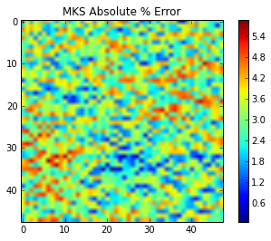
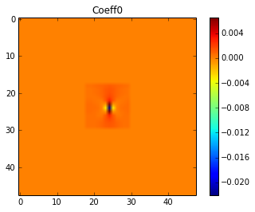
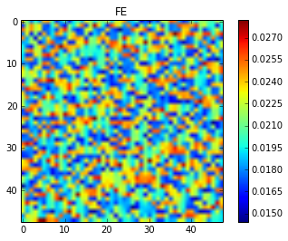
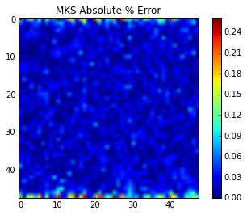
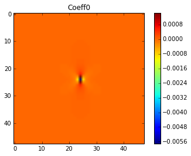
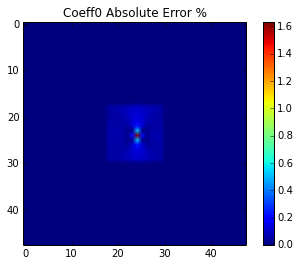
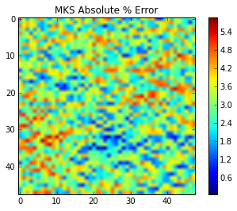
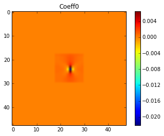
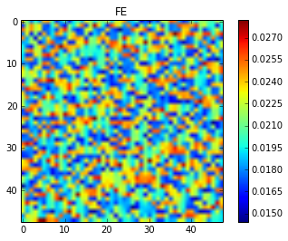
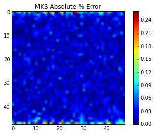
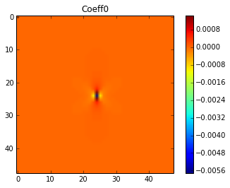
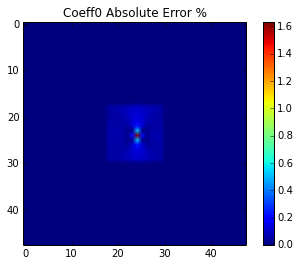
n = 5
Length = 9
s = np.zeros(n)
k0 = np.zeros(n)
for ii in range(n):
BigDel = getDel((ii+1)*Length)
BigMKSmodel = MKSRegressionModel(Nbin=2)
BigMKSmodel.fit(BigDel, FEmodel.predict(getProp(BigDel))[...,0])
print (ii+1)*Length
s[ii] = BigMKSmodel.coeff[0,0,1]
k0[ii] = BigMKSmodel.Fcoeff[0,0,1]
sfepy: matrix shape: (647, 647)
sfepy: assembling matrix graph...
sfepy: ...done in 0.00 s
sfepy: matrix structural nonzeros: 19391 (4.63e-02% fill)
sfepy: matrix shape: (647, 647)
sfepy: assembling matrix graph...
sfepy: ...done in 0.00 s
sfepy: matrix structural nonzeros: 19391 (4.63e-02% fill)
9
sfepy: matrix shape: (2591, 2591)
sfepy: assembling matrix graph...
sfepy: ...done in 0.01 s
sfepy: matrix structural nonzeros: 80303 (1.20e-02% fill)
sfepy: matrix shape: (2591, 2591)
sfepy: assembling matrix graph...
sfepy: ...done in 0.01 s
sfepy: matrix structural nonzeros: 80303 (1.20e-02% fill)
18
sfepy: matrix shape: (5831, 5831)
sfepy: assembling matrix graph...
sfepy: ...done in 0.01 s
sfepy: matrix structural nonzeros: 182687 (5.37e-03% fill)
sfepy: matrix shape: (5831, 5831)
sfepy: assembling matrix graph...
sfepy: ...done in 0.01 s
sfepy: matrix structural nonzeros: 182687 (5.37e-03% fill)
27
sfepy: matrix shape: (10367, 10367)
sfepy: assembling matrix graph...
sfepy: ...done in 0.02 s
sfepy: matrix structural nonzeros: 326543 (3.04e-03% fill)
sfepy: matrix shape: (10367, 10367)
sfepy: assembling matrix graph...
sfepy: ...done in 0.02 s
sfepy: matrix structural nonzeros: 326543 (3.04e-03% fill)
36
sfepy: matrix shape: (16199, 16199)
sfepy: assembling matrix graph...
sfepy: ...done in 0.03 s
sfepy: matrix structural nonzeros: 511871 (1.95e-03% fill)
sfepy: matrix shape: (16199, 16199)
sfepy: assembling matrix graph...
sfepy: ...done in 0.04 s
sfepy: matrix structural nonzeros: 511871 (1.95e-03% fill)
45
-c:12: ComplexWarning: Casting complex values to real discards the imaginary part
x = np.arange(n)
plt.figure()
plt.plot(x, s)
plt.title('real space')
plt.figure()
plt.plot(x, k0)
plt.title('K space')
y = k0/k0[0]
print y
print 1./(x+1.)
plt.figure()
ys = s/s[0]
print ys
print 1./((x+1.)**3.)
[ 1. 0.5 0.33333333 0.25 0.2 ]
[ 1. 0.5 0.33333333 0.25 0.2 ]
[ 1. 0.125 0.03703704 0.015625 0.008 ]
[ 1. 0.125 0.03703704 0.015625 0.008 ]
<matplotlib.figure.Figure at 0x4f15610>
import numpy as np
from pymks.datasets.microstructureGenerator import MicrostructureGenerator
m = MicrostructureGenerator(1, (10, 10), 2)
X = m.generate()
plt.imshow(X[0])
<matplotlib.image.AxesImage at 0x7f7250798110>
from pymks.filter import crosscorrelate
from pymks.bases import DiscreteIndicatorBasis
basis = DiscreteIndicatorBasis(n_states=2)
print X_.shape
print X_.shape[-1]
X_ = basis.discretize(X)
Y = crosscorrelate(X_)
(1, 10, 10, 2)
2